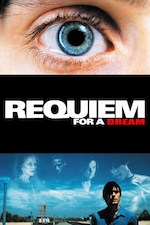
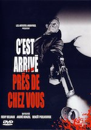

blablablablabla
|  |
Requiem for a dreamBased on the novel by Hubert Selby Jr., this gritty drama concerns four people trapped by their addictions. |
|  |
C'est arrivé près de chez vousMan Bites Dog is a Belgian faux-documentary and high-concept satire of media violence which follows the lethal exploits of Benoit Benoit Poelvoorde, an affable, and very talkative, serial killer. |
Ex_MachinaAlex Garland, writer of 28 Days Later and Sunshine, makes his directorial debut with the stylish and cerebral thriller, Ex_Machina. |
blablablablabla